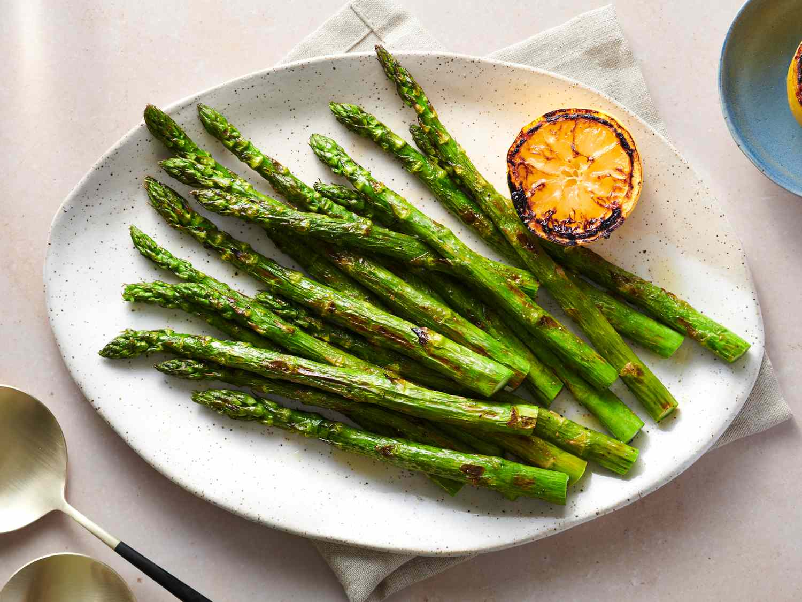
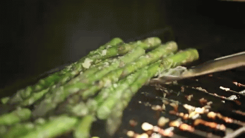

Grilled Asparagus

What you're getting yourself into:
Grilled asparagus is simple to make, but it lets you enjoy the natural flavor of your veggies. Fresh asparagus spears are coated with a bit of oil, salt, and pepper and cooked quickly over high heat on the grill. That's it!
Prep Information
- Prep Time: 10 min
- Cook Time: 5 min
Ingredients
- 1 pound fresh asparagus spears, trimmed
- 1 tablespoon olive oil
- salt and pepper to taste
Directions
Step 1: Preheat an outdoor grill for high heat and lightly oil the grate.
Step 2: Lightly coat the asparagus spears with olive oil. Season with salt and pepper to taste.
Step 3: Cook asparagus on the preheated grill, turning often until lightly charred and fork-tender about 3 to 5 minutes.
Once you're finished it's all MMM.
